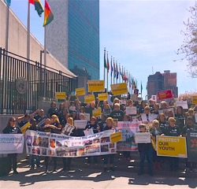
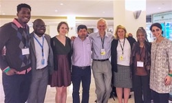

Dear Friends,
I write to you from New York City, to which I traveled 2,000 miles to join five other FOR global leaders at the first-ever United Nations Special Session on the World Drug Problem (UNGASS).
Register now for our UNGASS Debrief Call next Wed., April 27 at 8:00 p.m. ET.
This UN summit has deep personal meaning for me because my family bears the scars of the terrible misconception that policing and the stigmatization of addiction can cure a societal illness.
My father -- whose heroin addiction had almost entirely removed him from my life -- was severely maimed during a botched FBI raid in search of a suspected drug kingpin. (Read the complete story here.) The incident marked the first time that I viewed my father as a victim rather than a criminal and inspired my inquest of the drug war.
What I discovered is a massive narrative of criminal injustice in our society as our government's "war on drugs" has effectively criminalized instead of medicalized peoples' addictions.
Now, through the Fellowship of Reconciliation, I am honored to be a part of a multi-faith community addressing the issues of global drug policy in pursuit of a collectively dignifying way forward.
As FOR Executive Director Rev. Kristin Stoneking writes in a faith-based response to drug policy: "criminalization in a retributive justice paradigm will never lead to an eradication of the global drug problem ... addiction calls for a response of compassion rather than criminalization."
Our international delegation to UNGASS includes Kristin, myself, the International FOR's International Coordinator Rev. Lucas Johnson, American Friends Service Committee's Wage Peace Coordinator John Lindsay-Poland, Chile SERPAJ (Servicio Paz y Justicia) Regional Director Carlos Martinez, and Meet the Middle East Director Iman Jodeh. We believe this global event provides an opportunity to spark a new era of humane solutions to the drug crisis.
Partnering with the Samuel DeWitt Proctor Conference, a network of black faith leaders committed to justice, we have co-produced "Ending the Harm Unleashes the Power of Transformation" [PDF download]. The framework of this interfaith resource is inspired by Dr. Martin Luther King Jr.'s landmark speech "Beyond Vietnam: A Time to Break Silence," which called for a revolution of values: away from consumption and toward humanity.
Putting people at the center of global drug policy -- through what I propose as a Virtue Ethics theoretic approach -- will result in more societies that never give up on human potential and are therefore more restorative than punitive in drug measures and crime reduction. It will mean addressing the crimogenic and bankrupt conditions of the poorest neighborhoods, created by people in power, that produce drug crime in the first place.
Friends, this is a historic moment. We are eager to share this special UNGASS experience with you. Follow FOR on Twitter for live updates, and please register now to join us next Wednesday, April 27 at 8:00 p.m. ET (5:00 p.m. PT) for a national conference call in which members of our FOR delegation will debrief the UN summit.
Thank you,
 Anthony Grimes Anthony Grimes
Director of Campaigns and Strategy
Fellowship of Reconciliation USA
Photos: Families who lost loved ones to the drug war protesting at the U.N. courtesy of Drug Policy Alliance; FOR's international delegation from left to right: Anthony Grimes, Rev. Lucas Johnson, Gretchen Honnold, Carlos Martinez, John Lindsay-Poland, Rev. Kristin Stoneking, Dr. Iva Carruthers (SDPC), and Iman Jodeh. |